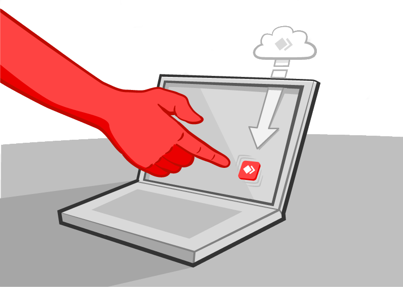
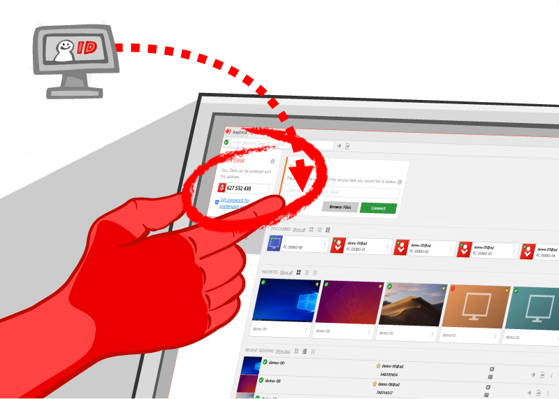

Instrukcja uruchomienia AnyDesk'a

Rozpocznij korzystać z AnyDesk w dwóch krokach, to bardzo proste.
 Pobierz odpowiednią wersję Anydesk, w zależności jaki posiadasz system operacyjny na komputerze.
Pobierz odpowiednią wersję Anydesk, w zależności jaki posiadasz system operacyjny na komputerze.
Kliknij dwukrotnie w ściągnięty plik AnyDesk, wtedy AnyDesk uruchomi się natychmiast.
Po uruchomieniu się programu w górnym lewym rogu znajduje się 9-cio cyfrowe ID Twojego stanowiska pracy.
Następnie w rozmowie telrfonicznej proszę podać to ID naszemu informatykowi, aby mógł nawiązać połączenie z Twoim komputerem.
Po chwili pojawi się okienko z prośbą akceptacji połączenie, co należy uczynić.
Od tej chwili nasz pracownik IT może szybko rozwiązać Twój problem.
2
